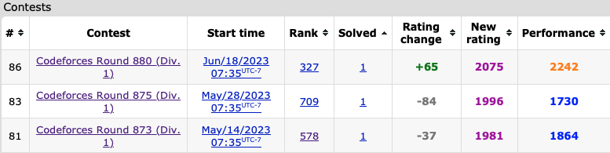

June 1st-15th
Here we have another typical recap. Sometimes I’m unsure what to put here in these initial sections, but I guess I have a few thoughts about this journal. I guess now I find this as a good form of self reflection on each contest I do, and one of the more honest expressions of myself. Anyways, here’s the two most recent CodeForces contests I went in:
Round 877
Problems Solved: A, B, C, D
New Rating: 2028 (+32)
Performance: 2110
To describe this contest in one sentence: It was looking ugly for a moment, but I got it done.
Thoughts on B
I had issues as early as B in this contest mainly due to myself trying to figure out why my solution worked. My assumption is that there is a pair that exists that would minimise the number of permutation subarrays to 2 (being for length 1 and length n). This intuitively makes sense but as to how exactly is the part I was pretty much guessing. With my solution I ended up trying 4 different swaps where either the value 1 or 2 is swapped to the left or right end of the array, and if this didn’t work I just guessed. Turns out that moving the value 1 or 2 to the end of an array will always be optimal. Either that or there’s a really obscure test case no one has found yet that would cause a successful hack. I’m leaning towards the former.I would go into more detail for C, as on the surface of my solve time, it looks like a fairly complex problem. However, this is more me overthinking this and it feels very similar in its constructive process to a B-level problem like Anti Permutation Forces. Yes, I still remember the “I can’t count to five” problem.
Literally the answer for C, after I go over the overcomplicating I did
First thing that can be noted is that there is no need to quickly determine if the dimensions of the grid are prime or not. I used a sieve to compute this but if either dimension is even, then it is sufficient to list the numbers incrementally row by row or column by column. Such ideas can be used to easily generate boards where the difference between each adjacent pair is either 1 or one of the dimensions of the grid.
If both dimensions are prime (or even just both odd works as well), then it’s a bit more complicated. First you can split the values into rows or columns as follows. For instance, for a 7x7 grid, one row will have 1-7, then 8-14, then 15-21, and so on until 43-49. From there you just place the highest value row in the middle, and place the remaining rows lowest the highest building out from the middle like this:
29 30 31 32 33 34 35
15 16 17 18 19 20 21
1 2 3 4 5 6 7
43 44 45 46 47 48 49
8 9 10 11 12 13 14
22 23 24 25 26 27 28
36 37 38 39 40 41 42With this method row by row adjacencies will trivially have a difference of 1. Between most columns the difference is 2n, where n is a dimension of the grid, which can never be prime. The difference between the middle 3 rows will vary, but assuming n is at least 5, it will be a factor of n and not equal to n, so it will also never be prime.
As for what my initial complication was? What my first idea was that if both dimensions are prime, then a grid of size n-1 by m could be filled out, and then for the remaining m values some sort of search algorithm would be needed to find a setup that specifically works there. An example of this thought is with this 5x5 grid, where a 5x4 grid is filled and the remaining values are placed god knows where:
1 2 3 4 22
5 6 7 8 23
9 10 11 12 24
13 14 15 16 25
17 18 19 20 21A fun case would be to try and show which grid dimensions have this sort of solution, or if this idea could be used for any grid size.
D is significantly harder, but I managed to figure this out. Somehow. With 6 minutes left in the contest.
D thought process
Seeing that there is up to 200000 queries and a length of 200000, this likely means the queries have to be at least O(log n). With the bracket sequence, a first useful idea is to think of each ( as a +1 and each ) as a -1. For a bracket sequence to be valid, when you take its running sum, it must always be non-negative AND its total sum has to be 0. That’s why something like ())()(() fails; after the first 3 characters its at a sum of -1.
This initial logic means that a valid bracket sequence must start with (, end with ), and be of an even length. The next step is to track where each (( and )) occurs. These are important as a backwards move can be used infinitely between these two patterns to increment/decrement the running sum as needed. If neither (( or )) is present in the sequence, then it is comprised of only ()()()()()..., which is always valid. If only one of them is present, then the final running sum will never be 0 making it always invalid. Lastly, if both of them are present, then the first (( must appear before the first )) in the sequence and the last )) must appear before the last (( in the sequence for the running sum to always remain non-negative. Assuming all the rules above are followed, the bracket sequence has a valid walk.
To track the first/last ((/)), you can use 4 heaps to track each occurrence. The general case is to add new occurrences of each pattern after flipping a symbol. After the additions, you check if the top of the heap is correct, and if not, keep removing the top of the heap until the top value represents the correct index where the pattern exists. Since each removal is O(log n) and only up to 2 new patterns could potentially be added (()( -> ((() for a heap (at most 4 heap pushes per query), this ends up as an amortised O(log n) operation.
Educational Round 150
Problems Solved: A, B, C
New Rating: 2010 (-18)
Performance: 1953
I did pretty weirdly on this contest. Normally a poor contest occurs due to missing a problem D or getting skill capped on later questions, but here more of the errors are due to scuffed execution on middle problems. B had one avoidable mistake which I attribute to bad implementation. C was incredibly scuffed and required over an hour to complete. My submission comments actually explain my thought process pretty well; the only change being that an E could replace the first of any A, B, C, or D letter, not just the first non E. D I was genuinely screwed on, but E was where I actually thought up a legit solution.
E solution
A row segment refers to the number of consecutive cells in a row. For instance, if the input was something like the following:
4
0 1 2 3
5Then there would be a single row segment of length 1, 2, 3, and 4. Once you know how many row segments of each length there are, computing the answer simply requires filling in the longest row segments greedily.
The eventual grid will resemble a bar chart, so you want to scan from top to bottom for when each column begins its white cells. Here the tricky part is tracking the length of each segment; for this I used two arrays L and R. With this setup, suppose a segment of white cells traverses indices a to b, then L[b] = a and R[a] = b. Another way to put it is that for the L array, L[x] = n means that index x is the right endpoint of a segment, and that n is the respective left endpoint. R array works in opposite. By tracking these indices, the length of the segment is calculable. Updating these segments with a new white cells results in one of three cases:
The new cells neighbours are both not part of existing segments: this results in this new cell creating a length 1 segment. One of the neighbours is in an existing segment, causing it to be extended by 1 unit Both neighbours are in existing segments, thus combining two segments into a single one
Each of these cases has its own rules for updating the segments and an array tracking the lengths of each segment. Lastly after every row, the segment lengths are accumulated for the eventual total of segments in the entire grid. Further optimization can be done by tracking the frequency of each segment length in each row instead of the length of each segment; this way a row with 100000 length 1 segments will not result in 100000 additions. In total, the maximum unique number of segment lengths possible in a row is about sqrt(2n) (1+2+3+4+5…), so this algorithm has a worst case runtime of \(O(n^{1.5})\).
The entire solution I devised for E is correct. The only problem was that I had about 10 minutes left in the contest to implement this. Needless to say, I didn’t exactly complete it in time. At least I upsolved it?
June 16th-30th
Today, on Days of Our Programmers,
Okay, I won’t go into dramatic persona mode for this log. That said, a bunch of funny things occurred in these contests. Plus there’s an important update at the end.
Round 880
Problems Solved: A
New Rating: 2075 (+65)
Performance: 2242

lmao
(I did say not all of these notes would be important.)
On a somewhat more serious note though, this contest was a case where one problem (the first three in Div 2) decided an absurdly large part of the rankings. Div 1 itself actually wasn’t that bad as at least the top 290 out of just under 800 coders got 2 problems. Div 2 though going from top 1500 for solving 3 problems to 16th place for getting D or E and no one there getting F, a contest with that difficulty spike nowadays would start a riot.
Maybe I could actually I don’t know, solve the second problem on a Division 1 contest for once? I find it amazing that my 5th best contest by performance rating can somehow still feel underwhelming, but here we are. Literally the only reason I got this rating increase was because I solved A in 10 minutes. Even this problem I have no clue how this ended up being rated at 1700 because the fact that brute force can be used to solve this because A,B,C <= 3 for most cases should make this so much easier.
Then we get B. I’ll just let this upcoming rant explain why I’m pissed over this.
Everything I have to say about B
This problem is partially the reason why the blog post for this contest is a nuclear waste zone, because going from a problem requiring a slightly optimised brute force to this might be the most egregiously overkill difficulty gap I’ve seen between two problems. In Division 1, this problem had around the same solve rate as C and is one of the few contests I’ve seen where only about a quarter of Div 1 contestants actually get B. Div 2 was even worse off; this problem was Div 2’s D problem and it got 7 solves there. Seven. (Before you ask, Div 2E ended up with 11 solves and no one got 2F). In what universe is deciding a contest on 3 problems considered legitimate? Pretty much everyone from 20th to 1500th was decided on who solved A to C fastest in Div 2, which is not exactly ideal. This also happened in Div 1 to a lesser case, hence why I decry my +65 gain as completely illegitimate.
Now for the actual problem, which is made worse by the fact I nearly had the answer. Since your ticket is rank n+1, you always lose tiebreakers on ranks to other tickets, so you can just sort them in order of number to make this easier. In this sorted list, suppose you have a number x, you calculate the minimum and maximum rank of your ticket in terms of value. What I mean is that if x is lower than all other tickets, then your rank is 0, if you have a ticket with a higher value than all other tickets, your rank is n, and so on. The min/max rank difference is for if you are considered higher/lower rank in value to tickets with the same number. Using this info you can figure out the range of values your ticket is a winner by computing midpoints between (x,ar[maxr-k]) and (x,ar[minr+k]), where maxr and minr are max/min ranks of the ticket in value.
You cannot test every value from 0 to m due to time constraints, and this is fine as only a few points are needed to find the optimal value. This is where I screwed up first, as I thought the best ticket number would always be within 1 of someone else’s ticket; so if someone had a ticket with the number 43, I would test 42, 43, and 44. The solution requires testing 41, 42, 43, 44, and 45, ie. all values within 2 of someone else’s ticket. I would say I know why this is the case, but I don’t actually completely know. I’m guessing this has something to do with a rounding case? This editorial solution by Soultaker explains this reasoning best here.
To top this all off, even after implementing the solution, I still had TLE occur because I ended using a O(log n) binary search to determine maxr and minr for each value tested. There is a viable method that uses two pointers to increment maxr and minr that takes amortised O(1) time per value. I will also note that this most likely does not happen if the limit for n is not 1000000. I think its safe to assume that 200000 or even 500000 would have been enough to limit the max runtime for solutions to \(O(n log n)\) but the 1000000 limit meant that my initial Python idea ended up TLEing over that extra log n factor. I have no further comments on this problem.
To top this off, had I got B, I actually end up reaching 2100. So in retrospect, I also choked on this contest. Yay.
CodeTON Round 5
Problems Solved: A, B, C, D
New Rating: 2051 (-24)
Performance: 1975
This sort of contest does highlight my improvement over the year. Last year at this time, this would be considered an excellent contest, but now this sort of run is quite pedestrian. A and B were completed in about half the time it would take for me to fully explain my thought process on both questions, and then we go to C which was a dp scuff question. I did minimise the number of wrong submissions made but taking 50 minutes and 3 wrong attempts here was not ideal to say the least. This is saved by myself actually doing quite well on D since it was a graph problem. Funny enough, the idea for this problem is similar to ABSOLUTEDIFF from CodeChef Starters 96; both use a creative dijkstra implementation. In solving both of these problems though, I genuinely did not notice this similarity. In reflection, I find that with these contests I tend not to be really strong at identifying exact techniques/algorithms necessary to solve problems, but in many of my ad hoc ideas I end up using these techniques inadvertently.
In 2026 terms, a 4 problem solve now is only average for me if I get everything without much penalty and in roughly an hour. At the very least solving A through E is still enough to get me a large rating boost. Well, usually.. Then again I’d still consider this contest to be strong overall compared to how I usually do.
Anyways, on to the last contest for this month. I’ll just let the reflection speak for itself.
Educational Round 151
Problems Solved: A, B, C, D
New Rating: 2129 (+78)
Performance: 2330
Wow.
I don’t know what else to say other than I actually made it. I had a feeling I’d reach Master at some point, I just didn’t expect it to be this soon and on this contest. The cause of this was a rocket pace A-C; 21 minutes was all that was needed, and even C was very fast.
Other thoughts on C
Most of these solutions involve a dp of sorts, and there are multiple implementations of it that work, but the fastest way I thought of uses a single passthrough of the password database. Pretty much you do the following:
Get all possibilities of the first digit in the password
Start looking through the string for each occurrence of possible digit
If all possibilities are exhausted, move to the next digit
Repeat until either the entire database is exhausted (YES) or there are no more digits for the password (NO)
In essence, this is a greedy method that chooses each digit to be the one showing up as late as possible in the database. Any digit taken earlier is suboptimal with some basic trial and error.
D pretty much completed this near perfect first hour of a contest. Alas, the second hour shows I still have some work to do with E still out of my perceived range, but D itself wasn’t exactly easy (about 1800 rated), and my pace there was well above my expectation.
Ideas on D
I’m still a bit unsure as to the exact proof that this is correct, but what I can say is that the optimal floor will always be the score value right before a rating drop. Furthermore, you only need to consider the score values that are their prefix maximums, so if scores of 7, 4, and 9 occur at indices 3, 8, and 12 respectively, then the score of 4 at index 8 can be disregarded.
With these points, we then need to determine what the final score would be if we set the rating floor to them. For this a running dp can be used from the back of the array. Keep track of two variables: inc and debt. From there you do the following with each ar element in reverse:
if ar[i] < 0: debt += -ar[i]
else:
inc += max(0,ar[i]-debt)
debt -= min(ar[i],debt)The inc value is logged in the dp array to signify the total increase if a rating floor was set at that exact index. This will be an incorrect computation in some cases where the rating is declining or not at a maximum prefix peak, but for the values tested this is always accurate. From there is a simple matter of finding the best score possible and recording the rating floor used.
With that, a 1.5 year journey from unranked to Master has been completed. Perhaps in a future post I might post a brief reflection on what I learnt in this process, since there were some intriguing moments. I can say though this was good timing; as of writing this, there is a high chance after all that I will be in my first co-op this August. I’ll share more details once I am officially in, but it will be an intriguing new challenge for me. I haven’t really thought of the time once I step away from competitive programming, but even if I may have less time than usual for this passion, you can believe I’ll still find ways to continue this endeavour. For those still reading, just know that this journey was a major reason as to how I ended up with this great opportunity, so keep coding. These last 18 months have shown that it is always possible.
I get that this ending bit here is meant to be like a storybook ending to this journey, but I’ll just say it is much more complicated than that. In fairness, I’d say I’m at least at a similar level to mid 2023 me in competitive programming even with the blatantly lower rating.